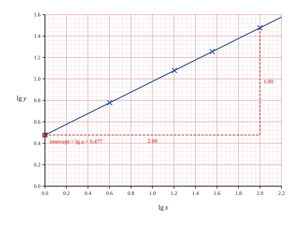

9 The variables x and y are related by y = axb, where a and b are constants. (a) Explain how a straight line graph may be drawn to represent this equation, and draw it for the given data on the grid below. [3]

Gradient b = 1.00 ÷ 2.00 = 0.5 · vertical intercept lg a = 0.477, so a = 100.477 = 3 · the ruled line is lg y = 0.477 + 0.5 lg x
Working — blue ink
y = axb ⇒
lg y = lg a + b lg x
Comparing with Y = mX + c: plot lg y against
lg x; gradient b, vertical intercept lg a.
lg x
0
0.602
1.204
1.556
2.000
lg y
0.477
0.778
1.079
1.255
1.477
Marks & notes — red ink
Key concept: take logarithms of both variables —
a power law needs lg x, not x.
B1 lg y = lg a + b lg x
B1 states: plot lg y against lg x,
gradient b, intercept lg a
B1 both logarithm rows computed to 3 d.p., all five points
plotted and a ruled straight line drawn
Trap plotting lg y against x suits
y = abx, not y = axb
Note the intercept is lg a, not a
— part (b) still needs a = 100.477
Note the points are exactly collinear (the data comes from
y = 3√x), so any visible scatter means a logarithm was mis-read